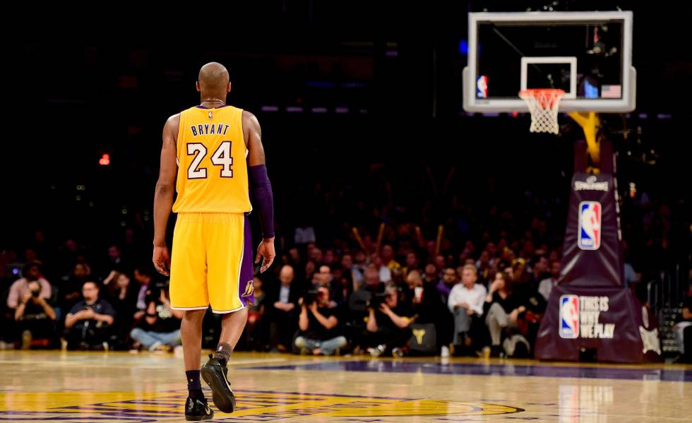

Kobe Bryant
The black mamba

Kobe Bryant in the day he retired from the courts 2016.HARRY HOW / GETTY
A star time line:
- 1996 - Drafted an traded
- 1997 - Slam Dunk contest Champion
- 1999 / 2002 - Phil Jackson arrives and the three-peat
- 2004 - Fallout with Shaq
- 2005 - Phil Jackson returns
- 2006 - Career-high 81 points
- 2008 / 2010 - Return to championship form
- 2012 - Final Olympic medal
- 2016 - 'Dear Basketball' / Retirement
- 2017 - Jersey retirement
- 2018 - Oscar
- 2020 - The star went to the sky ...
Kobe Bryant (1978 - 2020)
"Dear Basketball ... I'll love you always - Kobe"
To know more details about his life and career click here!